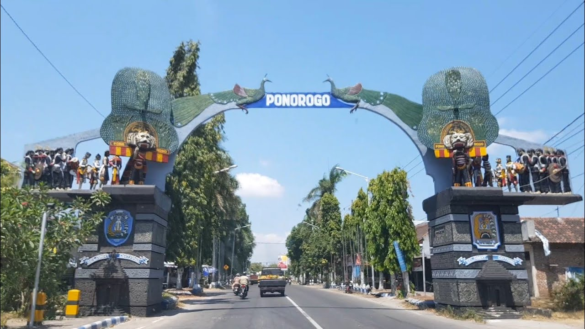
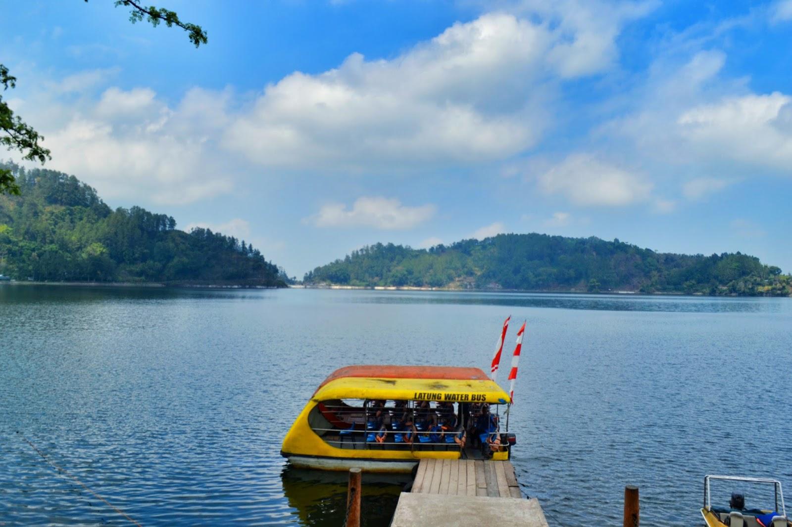

Sejarah

Menurut Babad Ponorogo (Purwowidjoyo;1997), setelah Raden Katong sampai di wilayah Wengker, lalu
memilih tempat yang memenuhi syarat untuk pemukiman
( yaitu di dusun Plampitan Kelurahan Setono Kecamatan Jenangan sekarang). Melalui situasi dan
kondisi yang penuh dengan hambatan, tantangan, yang datang
silih berganti, Raden Katong, Selo Aji, dan Ki Ageng Mirah beserta pengikutnya terus berupaya
mendirikan pemukiman. Sekitar 1482 M eng konsulidasi wilayah
mulai di lakukan.
Tahun 1482 – 1486 M, untuk mencapai tujuan menegakkan perjuangan dengan menyusun kekuatan, sedikit
demi sedikit kesulitan tersebut dapat teratasi, pendekatan
kekeluargaan dengan Ki Ageng Kutu dan seluruh pendukungnya ketika itu mulai membuahkan hasil.Dengan
persiapan dalam rangka merintis mendirikan kadipaten didukung
semua pihak, Bathoro Katong (Raden Katong) dapat mendirikan Kadipaten Ponorogo pada akhir abad XV,
dan ia menjadi adipati yang pertama.
Geografis
Kabupaten Ponorogo mempunyai luas 1.371,78 km² yang terletak antara :
111° 17’ – 111° 52’ Bujur Timur dan
7° 49’ – 8° 20’ Lintang Selatan
dengan ketinggian antara 92 sampai dengan 2.563 meter diatas permukaan laut, yang berbatasan dengan
Sebelah utara Kabupaten Madiun, Magetan dan Nganjuk.
Sebelah Timur Kabupaten Tulungagung dan Trenggalek.
Sebelah Selatan Kabupaten Pacitan.
Sebelah Barat Kabupaten Pacitan dan Wonogiri (Jawa Tengah).
Adapun jarak Ibu Kota Ponorogo dengan Ibu Kota Propinsi Jawa Timur (Surabaya) kurang lebih 200 Km
arah Timur Laut dan ke Ibu Kota Negara ( Jakarta )
kurang lebih 800 Km ke arah Barat. Dilihat dari keadaan geografisnya,Kabupaten Ponorogo di bagi
menjadi 2 sub area, yaitu area dataran tinggi yang meliputi
kecamatan Ngrayun, Sooko dan Pulung serta Kecamatan Ngebel sisanya merupakan daerah dataran rendah.
Sungai yang melewati ada 14 sungai dengan panjang antara 4
sampai dengan 58 Km sebagai sumber irigasi bagi lahan pertanian dengan produksi padi maupun
hortikultura. Sebagian besar dari luas yang ada terdiri dari area
kehutanan dan lahan sawah sedang sisanya digunakan untuk tegal pekarangan Kabupaten Ponorogo
mempunyai dua iklim yaitu penghujan dan kemarau.
Wisata
Seorang traveler yang mengaku sebagai pencinta alam wajib berkunjung ke Kota Ponorogo. Salah satu
kabupaten di Provinsi Jawa Timur ini memiliki deretan tempat
wisata alam yang sangat indah. Deretan tempat wisata di Ponorogo tersebut pun masih terjaga
kelestariannya sehingga tak hanya sejuk dipandang, tapi juga menyuguhkan
udara yang menyegarkan.
Telaga Ngebel

Telaga Ngebel, sebuah pesona wisata Telaga yang berada di daerah Ponorogo. Lebih tepatnya, danau
ini berada di perbatasan antara Ponorogo dan juga kabupaten Madiun.
Ketenangan dan keindahannya akan mempesona setiap wisatawan yang datang berkunjung. Apalagi,
saat mendengar sebuah legenda yang berkembang tentang Telaga Ngebel.